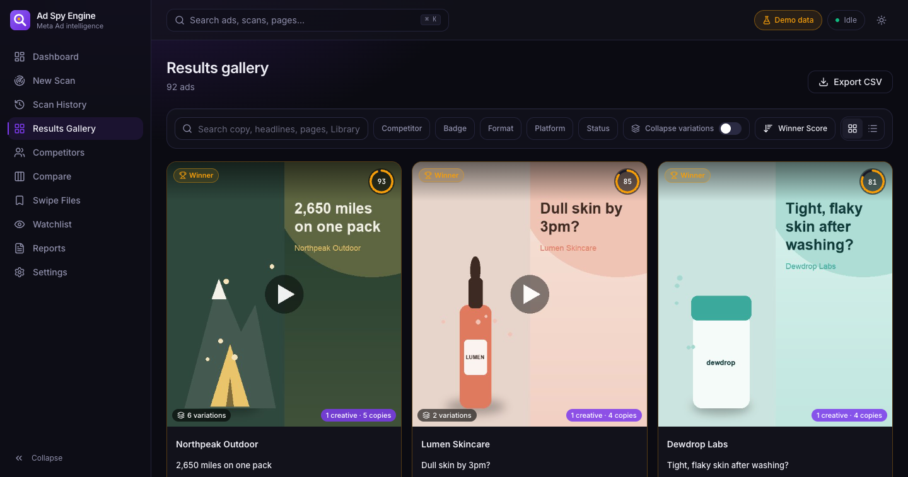
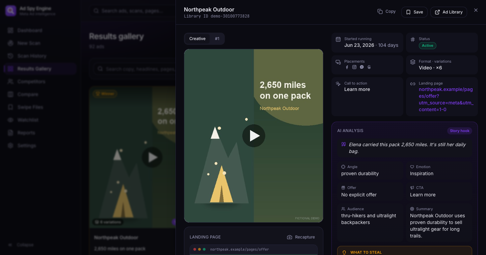
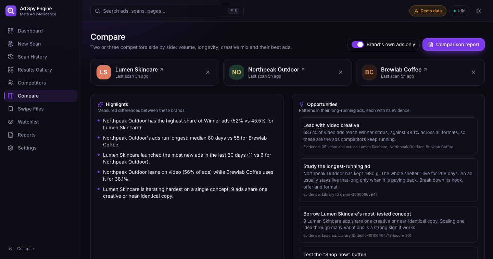

Ad Spy Engine
Turn any competitor's Meta ads into a winning-creative playbook.

Competitor research on Meta is slow, blind and forgetful.
The Meta Ad Library shows every active ad, but it's built for transparency, not for strategy. Marketers and agencies end up doing the analysis by hand.
Manual, ad by ad
Opening hundreds of ads, copying text, noting dates and placements, saving screenshots into folders.
Which ads actually work?
The library shows no spend or results. Telling a proven winner from a one-day test takes judgement every time.
Changes go unnoticed
Competitors launch, scale and kill ads every week. Without history, nobody sees the pattern until it's too late.
A local app that scans a competitor's public Meta ads in minutes, scores which ones are winning, tracks every change, and turns it into a branded client report.
One-click scans
Brand name or Page ID in, every active ad out: copy, dates, placements, creatives, landing pages. Live progress as it runs.
Winner Score
A transparent 0–100 score from longevity, variations, placements and status. Every score explains itself.
Watch & alert
Scheduled re-scans detect new, stopped and scaled ads, then alert you on Telegram or email.
Agency reports
Compare brands, build swipe files, export white-label PDFs with AI-written opportunities.
From brand name to playbook in five steps.
Search
Brand or Page ID, country, format and placement filters
Scan
Headless Chrome reads the public Ad Library and its JSON, with humanized scrolling
Score
Winner Score, variation grouping and change detection between scans
Analyze
Optional Claude analysis of hooks, angles and offers, with cost confirmed first
Report
Dashboard, alerts and branded A4 PDF reports for clients
Built for the way creative strategists work.


Production habits in a local app.
Job queue
The scan table doubles as a queue. One worker, restart recovery, graceful cancel, orphaned-Chrome cleanup.
Live SSE progress
Server-Sent Events stream counters, thumbnails and log lines to the browser as ads arrive.
JSON-first parsing
Reads the data the page already loads, including GraphQL pagination. Text-anchored DOM fallback; selectors live in YAML.
Humanized & polite
Randomized scroll pacing, retries with backoff, a rate limit between scans, blocking detection. Never logs in.
Change detection
Snapshots per scan → new, stopped, scaled. Guards against false "stopped" when a scan hits its cap.
Variation grouping
Perceptual hashing with banded LSH plus near-duplicate copy matching clusters iterated concepts.
Structured AI
Claude with JSON-schema outputs, Pydantic validation, per-ad caching, cost estimate before each run, graceful fallback.
Tested offline
107 automated tests on fixtures captured from real Ad Library pages, plus ruff, mypy, ESLint and type-checked React.
Measured on real scans, not mock-ups.
Two scans of the public Meta Ad Library (US) recorded by the project's benchmark script.
| Scan | Ads | Time | Ads / min | Fields captured |
|---|---|---|---|---|
| Gymshark (cap 300) | 300 | 83 s | 216 | 100% |
| Huel (cap 200) | 200 | 91 s | 132 | 100% |
Source: docs/benchmarks.json (Chrome 154, Apple Silicon Mac, home connection). "Fields captured" = Library ID, start date, placements, copy, card screenshot and creative present for every ad. The manual estimate is an assumption, not a measured study. No client testimonials are claimed.
Modern, boring where it counts.
Want a custom automation like this for your business?
Scrapers, dashboards, monitoring and AI workflows, built to run reliably and handed over with docs.